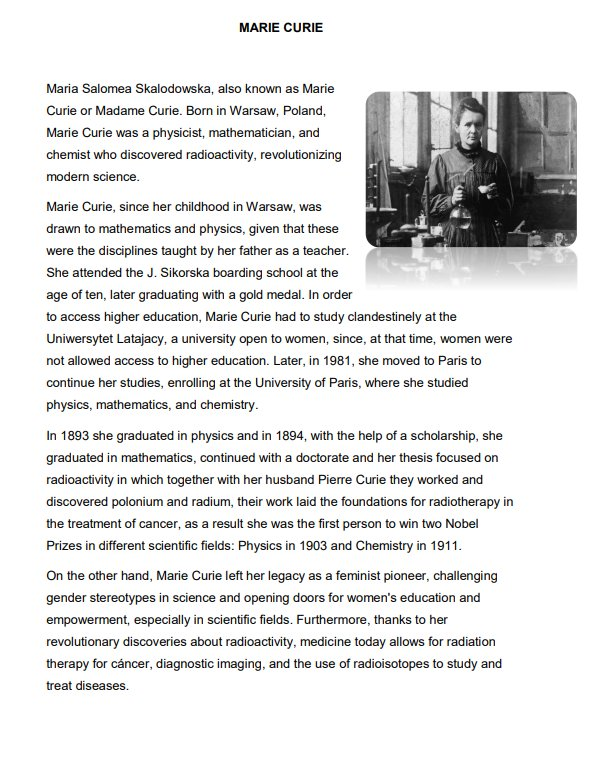
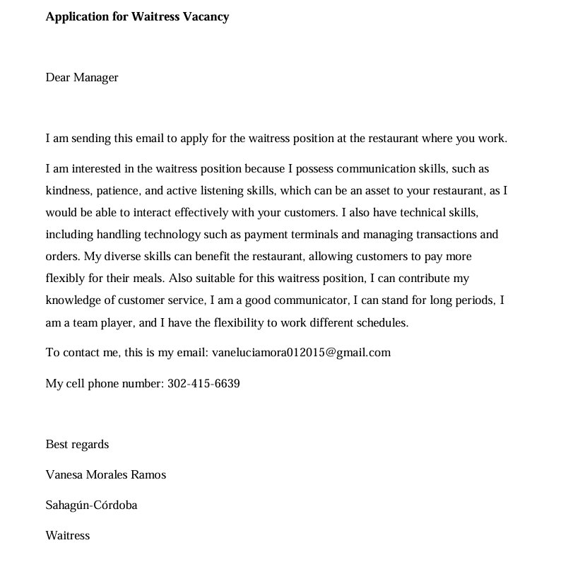
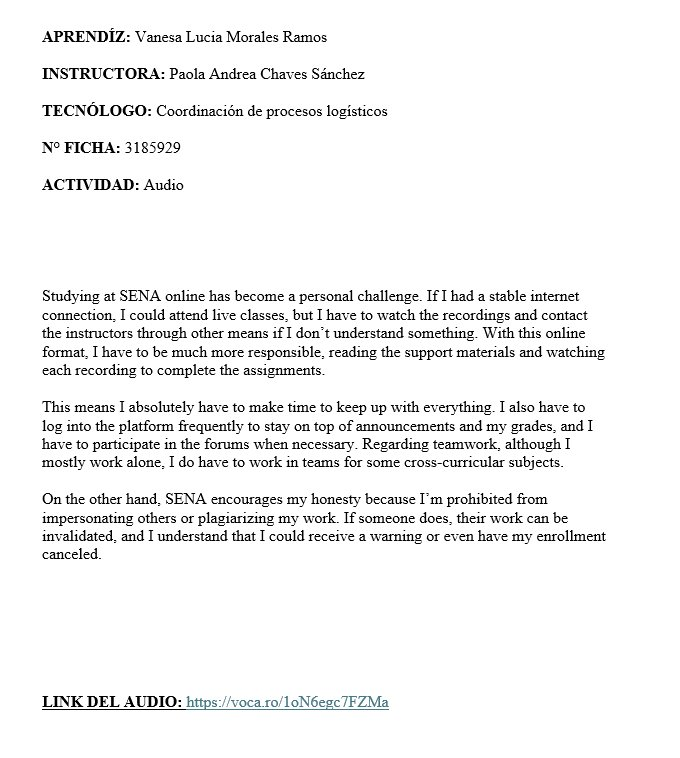
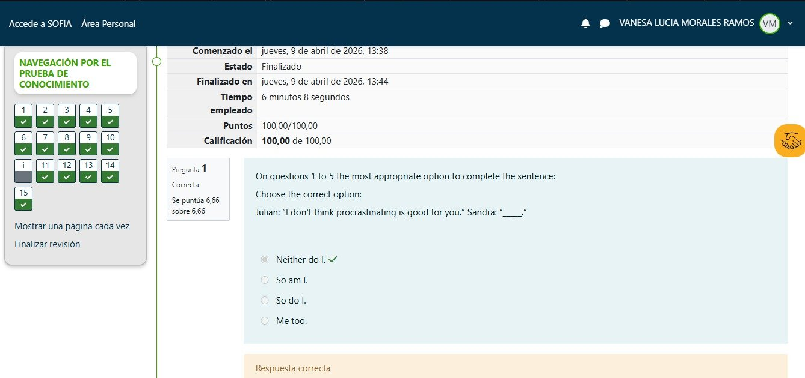
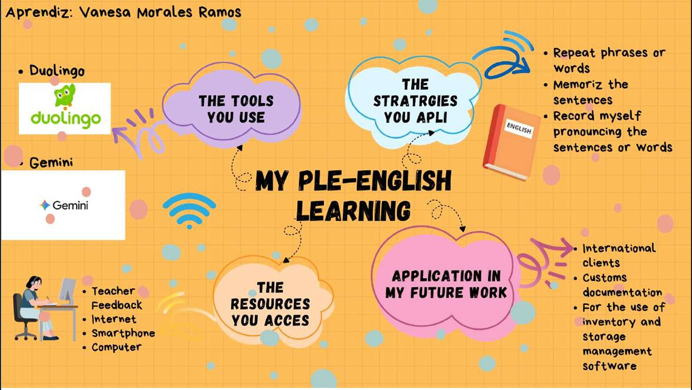

Marie Curie
Chronicle
Through this assignment, which involved researching a person who made a significant contribution to the world, I focused on the great physicist, mathematician, and chemist Marie Curie. This activity helped me learn that thanks to her, radioactivity was discovered, revolutionizing modern science and enabling us to combat diseases like cancer today.
Marie Curie opened doors for education and empowered women, who are now seen as having the same rights as men in society. Furthermore, this assignment allowed me to learn and apply comparatives and superlatives in the summary of this chronicle, which I created using Word and translated using Google Translate.

Application for Waitress Vacancy
Written Document
This assignment consisted of writing a document in English using Word, following APA style guidelines. This activity helped me develop my written and formal communication skills by addressing the manager of a restaurant where there was a waitress vacancy. I applied correct spelling and grammar throughout the document.
Furthermore, I was able to present my qualifications for the job, briefly outlining my most relevant skills and experience. I also demonstrated business acumen by outlining the restaurant's needs to the manager, aligning them with my profile. Additionally, this assignment allowed me to practice using and remembering subject pronouns, possessive pronouns, and object pronouns within sentences and by creating this written text for my learning.

Online Learning Reflection
Audio
This recording prompted me to reflect on life and the obstacles we face. While discussing the difficulties of studying online, I realized that there are always solutions, even if they seem impossible, as long as we are determined and committed to achieving each goal.
This recording also taught me how to apply conditionals (zero, one, two, and three) in any area of life and how to use tools like Vocaroo, which allows you to record online and share the audio link immediately. This website made it easy for me to complete this audio recording activity.
Listen to the recording
Expressions of Commonalities
Questionnaire
Through this questionnaire, I was able to apply the expressions of commonalities (TOO, SO, NEITHER, and EITHER) with the goal of learning how to use them in everyday life. This was done by completing sentences and choosing the correct answer, since each of these expressions has a specific order that must be considered for learning and applying them both orally and in writing.
With the help of the instructor's explanations in class and the Google Translate tool, I was able to understand this topic and complete this questionnaire.

My PLE — English Learning
Mind Map
This activity focused on each learner's personal bilingual learning process, specifically identifying the tools, strategies, and resources we use to learn this cross-curricular subject. The goal was to analyze whether we need to implement more tools or if we are using the correct ones for our English learning.
Furthermore, creating this mind map helped me understand that the more resources, strategies, and applications we have, the more effective our English learning becomes.
